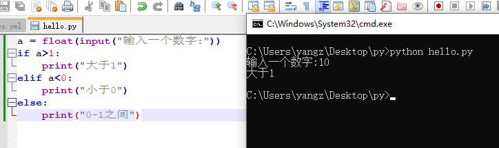
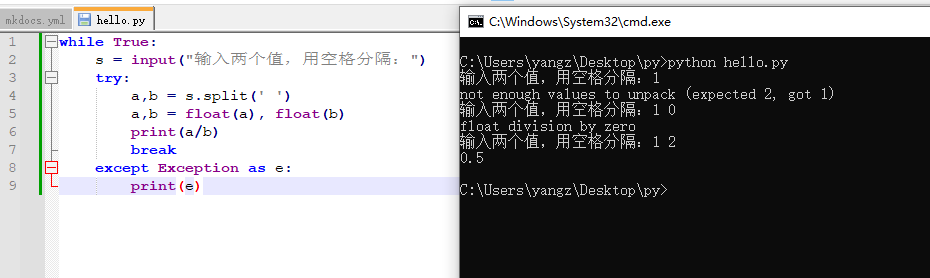
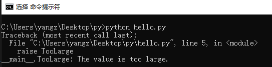

内置关键字(without h1, tongyi ai summary)
AI Summary powered by 通义千问
Python的语法学习包含单行逻辑处理和多行逻辑块，如缩进表示代码结构，4个空格为推荐缩进。自定义函数通过def声明，接受参数，可返回值，支持按位置、名或混合方式传递。lambda用于定义匿名函数。类定义涉及__new__和__init__方法，用于对象创建和初始化，支持类的继承。条件语句如if、elif用于基于布尔表达式的逻辑判断，input函数获取用户输入。for循环遍历可迭代对象，range和iterable是关键。while循环在条件为真时持续执行。循环控制关键字包括continue跳过当前循环，break退出循环，pass无操作。循环的else子句在正常结束时执行。Python 3.10引入了match语句。for和while循环有不同的适用场景和控制结构。
copy from https://yangzhang.site/Python/BasicSyntax/builtin_keyword/
到目前为止，我们所学的内容都是一句话可以解决的。不论是函数调用，还是变量赋值抑或是创建对象。
接下来我们就要学习多行组成的逻辑块。为了学习这个内容，我们先要介绍python中另外一个重要的文法——缩进（这也是新人最出错的地方之一）
缩进
在python的脚本中，缩进是有语法涵义的，它蕴含了代码的逻辑结构。缩进规格相同的代码处于同一层级，缩进越多代码层级越深。
例如：
def hello():
print("hi")
print("hello world")
def的用法如何，但看这两行代码我们就能知道#!python print("hi")和#!python print("hello world")是同属于def内部的代码。而如果去掉其中一个缩进，代码的意味就完全不同了：
def hello():
print("hi")
print("hello world")
#!python print("hi")是def内部的子代码，而#!python print("hello world")和def处在同一层次。
了解了缩进的意义之后，我们来学习缩进的方法。常见的缩进方法有两类：
- tab党
- space党
这就好比豆腐脑儿的咸甜党，各有人拥护。我这里只介绍space，也就是空格的缩进方法。理论上不论是多少个空格都是合法的缩进：
def hello():
print("hi")
def hello():
print("hi")
def hello():
print("hi")
def hello():
print("hi")
但是按照PEP8（Python Enhancement Proposal 8）的建议，我们推荐使用4个空格来作为一层缩进。
自定义函数
def
自定义函数的格式前文已经多次出现了，这里给出一个更加复杂的版本：
def f(a, b):
print(a, b)
return a + b
print(f(2, 1)) ## 返回值为3
print(f(1, 4)) ## 返回值为5
def关键字来声明，然后空格，写下函数的名字和双括号()，在括号内写函数可以传入的参数，参数可以有多个。
参数可以作为函数内部的变量来使用，在函数被调用的时候会把传入的值赋值给对应的变量然后依次执行函数中所有的内容。请注意，函数内部的空间和外部的空间是不同的命名空间，变量并不通用。一般来说内部可以访问外部的变量，但是外部不可以访问内部的变量。
最后用return关键字来声明函数的返回值，函数结束之后就会返回这个值。如果没有return语句，就会返回一个None，代表没有返回值。
函数调用的方式是()，读者应该以及很熟悉。而函数传递参数的方式有很多种：
- 按照位置顺序传递：
f(1, 4)就是这种用法 - 按照名字传递：
f(a=1, b=4)这种用法可以无视位置，例如：f(b=4, a=1) - 混合：
f(1, b=3)不推荐
一般而言不引起歧义的时候都可以按照位置顺序来传递参数。
lambda
之前的文章中也提到过存在没有名字的函数，这里我们就来介绍一下所谓的匿名函数。
匿名函数的定义方式为lambda parameter : return value，例如
lambda x : x+2
(lambda x : x+2)(3)
# 返回值是5
注意到上面的
(lambda x : x+2)里的括号代表一种逻辑优先级，先执行lambda语句得到一个函数对象然后再调用，这和数学中的圆括号是类似的。
而如果把匿名函数赋值给一个变量，那么就可以当作正常的函数来使用：
add = lambda x,y : x+y
print(add(1, 2)) ## 打印出来的是3
l = [1j, 2j+3, 1j, 3j+1]
l.sort(key = lambda x:x.real)
print(l) # 输出的值为 [1j, 1j, (1+3j), (3+2j)]
这里也展示了python中虚数的表示方法：
1j，请注意不能用j代替1j，并且0和0j也不完全相同，前者是整数对象，后者是复数对象。
更加丰富的函数理论我们会在高级语法的函数式编程模块中介绍。
自定义类
从类到对象的过程
自定义类的格式之前的文章也出现过，下面我们加上一个__new__方法，让逻辑更加完整：
class Teacher:
"""老师类"""
def __new__(cls, age): ## 一般而言这个方法可以省略
print("new")
return super().__new__(cls)
def __init__(self, age): ## 如果需要初始化对象，这个方法不可省略
print("init")
self.age = age
def update_age(self):
print("update age")
self.age += 1
wang = Teacher(20)
print("老师现在的年龄: ", wang.age)
wang.update_age()
print("老师明年的年龄: ", wang.age)
new
init
老师现在的年龄: 20
update age
老师明年的年龄: 21
+=语法糖
细心的读者会发现，上面的代码中使用了一个从未介绍过的符号+=。实际上这是python的语法糖之一：
- 简写：
a += b - 等价写法：
a = a + b
类似的我们还有*=，/=，-=，//=和%=。
借此机会补充一下之前漏掉的运算符相关内容。实际上这些内容比较符合日常使用习惯，所以也不必浪费太多笔墨：
+：加法运算符，也可以作为一元运算符-：减法运算符，也可以作为一元运算符/：除法运算符*：乘法运算符%：模运算符**：乘方运算符//：地板除运算符，等价于除法然后向下取整
首先看文法，这里涉及到了两层缩进。第一层缩进是class关键字下方，代表类定义的内部。第二层缩进是def关键字下方，代表类方法的内部。
其次注意到，我们定义__new__方法的时候使用了一个参数cls，它是python在创建对象的时候自动传入的参数，代表要创建的类。对象创建完毕后的类方法都可以使用一个参数self，这个self参数在实际方法调用的时候无需传递，python会把对象本身作为self的值传递进来。这两个参数的位置和名称都是不可变动的。另外和函数内部命名空间类似，类内部的命名空间也是自成一体的，和外部相对独立。
再次，__init__函数的返回值必须是None，而__new__的返回值为super().__new__(cls)，实际上就是调用了超类（或者叫父类）的__new__方法，新建了一个cls类的对象。
如果不指定继承某个类，那么python新建的类会自动继承自
object类，而super()的返回值就是这个被继承的父类
最后我们通过输出的结果不难得知代码的运行过程：
- 运行了
__new__方法，创建了Teacher类的一个实例 - 运行了
__init__方法，初始化它的age - 在
#! wang = Teacher(20)中就调用了__init__方法，把wang的age属性赋值为20 - 打印了
wang的age属性 - 更新了年龄
- 打印了更新后
wang的age属性
类的继承
之前也提过这个概念，方便起见我们有时需要让某个类具有另外一个类的全部属性，那么就可以用类的继承来实现。例如下面的经典写法：
class Person:
"""人类"""
def __init__(self, age):
print("create a person with age ", age)
self.age = age
def update_age(self):
print("update age")
self.age += 1
class Teacher(Person): ## 继承关系用()来表示
"""老师类"""
def __init__(self, age, lesson):
super(Teacher, self).__init__(age)
print("set lesson as ", lesson)
self.lesson = lesson
wang = Teacher(20, 'math')
print("老师现在的年龄：", wang.age)
print("老师教授的科目：", wang.lesson)
wang.update_age()
print("老师明年的年龄：", wang.age)
create a person with age 20
seet lesson as math
老师现在的年龄： 20
老师教授的科目： math
update age
老师明年的年龄： 21
上面的代码示例中，老师类继承了人类（表示方法为Teacher(Person)），但是老师比人多出来一个属性：教授的课程。
于是我们需要定义老师类的初始化函数。但是又懒得完全重新写一次，于是先调用了父类的初始化函数：super(Teacher, self).__init__，完成父类定义的初始化内容，然后再进行进一步的初始化。
这个过程通过打印出来的文字内容也可以获悉：
- 先打印了：
create a person with age 20，这是父类中定义的过程 - 然后打印了：
seet lesson as math，这是子类中定义的过程
至此，较为基础的类的知识就介绍完成了。类是python中最重要也是最深刻、最困难的内容之一，需要好好理解。上面的代码都是经典的写法，读者可以效仿这些写法进行练习。
更多的类编程的技术我们会在高级教程的面向对象编程模块介绍。
if条件语句
布尔表达式
在讲解if条件语句之前，我们得先来了解布尔（bool）表达式。
bool是python中的一个类，他有且仅有两个值：True和False
help文档中的说法是：The builtins True and False are the only two instances of the class bool.
这两个值分别代表真伪，这就类似于数学中的真假命题。
所谓的布尔表达式指的是结果为布尔值的算式，例如：
1 == 21 < 21 is Noneany(...)和all(...)
等等。
逻辑运算符
在布尔表达式中常见以下的逻辑运算符：
is：判断两个对象是否为同一个对象not：取否in：判断是否属于and：取和or：取或><=>=<=!=：最后一个是不等于，其他按照语义理解即可
实际上你可以在python中输入help("&")来获取相关信息：
所有的operator
+-------------------------------------------------+---------------------------------------+
| Operator | Description |
|=================================================|=======================================|
| "(expressions...)", "[expressions...]", "{key: | Binding or parenthesized expression, |
| value...}", "{expressions...}" | list display, dictionary display, set |
| | display |
+-------------------------------------------------+---------------------------------------+
| "x[index]", "x[index:index]", | Subscription, slicing, call, |
| "x(arguments...)", "x.attribute" | attribute reference |
+-------------------------------------------------+---------------------------------------+
| "await x" | Await expression |
+-------------------------------------------------+---------------------------------------+
| "**" | Exponentiation [5] |
+-------------------------------------------------+---------------------------------------+
| "+x", "-x", "~x" | Positive, negative, bitwise NOT |
+-------------------------------------------------+---------------------------------------+
| "*", "@", "/", "//", "%" | Multiplication, matrix |
| | multiplication, division, floor |
| | division, remainder [6] |
+-------------------------------------------------+---------------------------------------+
| "+", "-" | Addition and subtraction |
+-------------------------------------------------+---------------------------------------+
| "<<", ">>" | Shifts |
+-------------------------------------------------+---------------------------------------+
| "&" | Bitwise AND |
+-------------------------------------------------+---------------------------------------+
| "^" | Bitwise XOR |
+-------------------------------------------------+---------------------------------------+
| "|" | Bitwise OR |
+-------------------------------------------------+---------------------------------------+
| "in", "not in", "is", "is not", "<", "<=", ">", | Comparisons, including membership |
| ">=", "!=", "==" | tests and identity tests |
+-------------------------------------------------+---------------------------------------+
| "not x" | Boolean NOT |
+-------------------------------------------------+---------------------------------------+
| "and" | Boolean AND |
+-------------------------------------------------+---------------------------------------+
| "or" | Boolean OR |
+-------------------------------------------------+---------------------------------------+
| "if" – "else" | Conditional expression |
+-------------------------------------------------+---------------------------------------+
| "lambda" | Lambda expression |
+-------------------------------------------------+---------------------------------------+
| ":=" | Assignment expression |
+-------------------------------------------------+---------------------------------------+
if语句的结构
了解了布尔表达式之后我们就可以来写if条件语句了：
a = float(input("输入一个数字："))
if a>1:
print("大于1")
elif a<0:
print("小于0")
else:
print("0-1之间")
elif就是else if的简写，那基本就是自然语言了，没啥好说的。
if和elif后面需要跟着一个布尔表达式，然后就是挨个判断，如果不满足就进入下一个选项，如果满足就结束掉这个逻辑块。写if语句之前需要理清楚逻辑关系，先判断哪个后判断哪个很重要。如果把上面的语句改成：
if a>=0 and a<=1:
print("[0,1]")
elif a>1:
print(">1")
else:
print("<1")
a>1与否可以过滤掉数轴上一半的值，而判断0<=a<=1则只能过滤掉数轴上[0,1]的值，孰优孰劣高下立判。
了解一下其他语言的情况
if条件句大概是任何一门编程语言都有的，但是elif大概是python的特产，因为它是python的缩进带来的。
if a:
pass
else:
if b:
pass
else:
if c:
pass
else:
pass
elif在python的缩进体系下，每次想使用else if都需要缩进一次，一旦逻辑结构比较复杂，缩进就非常让人头疼了。
其他语言（C和类C语法的一大堆编程语言）都是这种造型：
if( x == 10 ){
System.out.print("Value of X is 10");
}else if( x == 20 ){
System.out.print("Value of X is 20");
}else if( x == 30 ){
System.out.print("Value of X is 30");
}else{
System.out.print("这是 else 语句");
}
elif了。
这里主要来介绍一下input函数，它可以获取用户的输入：

可以说这个函数提供了无穷的可玩性。
紧凑型的if语句
某些时候if语句可以写成只有一行的紧凑形式：
abs_of = lambda x: x if x>0 else -x
match语句
python 3.10新加入的功能，本身的功能使用if语句都可以实现，结构如下：
flag = False
match code: # 用code来匹配
case '404': # 如果code是404，就运行下面的代码
print("Not Found")
case '502' if flag: # 只有当flag为真的时候，才去匹配502
print("Badway")
case '405':
print('Method Not Allowed ')
case _: # 未能匹配到的全部执行下面的语句
print('未知')
for循环
range
介绍for循环直接得先介绍一下range类。
我就不再细讲了，直接放出help文档：
Return an object that produces a sequence of integers from start (inclusive)
| to stop (exclusive) by step. range(i, j) produces i, i+1, i+2, ..., j-1.
| start defaults to 0, and stop is omitted! range(4) produces 0, 1, 2, 3.
| These are exactly the valid indices for a list of 4 elements.
| When step is given, it specifies the increment (or decrement).
而for循环的作用就是来遍历一个序列，所以range这个类经常在for循环中出现承担计数的责任。
iterable
下面来介绍iterable类，这是所有可迭代对象的总称，具体来说就是定义了__iter__方法的类。
而所谓的可迭代，指的就是这个对象里面有若干个东西，可以一个一个地拿出来。
比如：
- 列表
[1, 2, 3]就是可迭代的 - 字符串
"hello"也是可迭代的 - 整数
2就是不可迭代的
不难理解，如果一个对象不可迭代，那么它也就不能作为for循环遍历的对象，里面都没东西迭代啥呢。
for循环的结构
现在，终于能见到for循环本体了：
for i in range(10):
print(i)
for something in iterable，重中之重在于被迭代的对象需要是一个可迭代对象，否则会报错。
而代码运行的逻辑过程就是，从可迭代对象中依次取出元素，然后执行下面的语句。
while循环
while循环则比较简单：
n = 1
while n < 10:
print(n)
n += 1
循环控制
continue, break和pass
下面我们来介绍continue，break和pass，他们都是循环控制中的关键字。
某些时候，我们可能需要直接跳到下一次循环（continue）、提前终止循环（break）或者是啥也不做（pass）。
例如：
for i in range(100):
if i%2:
print(i)
else:
pass
0-99之间的数字，如果是奇数就打印出来，偶数则啥也不做。
当然
while循环中也可以使用pass关键字，逻辑相同
再如：
for i in range(100):
if i%2 == 1:
continue
elif i%3 ==0:
print(i)
0-99所有既是2的倍数，又是3的倍数的数字。这里使用continue的意义在于，每当一个数字是奇数的时候，我们就直接跳过本次循环，而不去判断它是否是3的倍数。这样可以极大提高效率。
当然，
while循环中也可以使用continue关键字，逻辑相同
最后：
n = 0
while True:
print(n)
n += 1
if n>10:
break
0-11的数字，这里写了一个死循环：while True，这样的写法也很常见，但是请务必在死循环中明确定义break语句，用以终止循环。
当然，
for循环中也可以使用break关键字，逻辑相同
此外提一下，如果多层循环嵌套，这些关键字都只会影响本层循环，不会影响外层的循环。
循环的else子句
如果想在循环正常结束之后执行一些操作可以使用else关键字，例如：
for i in range(10):
print(i)
else:
print("Done")
0
1
2
3
4
5
6
7
8
9
Done
如果循环没有正常结束，而是被break语句终止，那么else子句的内容不会执行：
for i in range(10):
print(i)
if i==3:
break
else:
print("Done")
0
1
2
3
while循环也是如此，如果想要在条件由真变为假之后执行一些操作，可以用else子句
import语句
至此我们python内置的语法我们就基本介绍完了。下面我们来介绍import关键字，通过这个语句我们可以导入包和库，例如导入python的标准库math：
import math
math的对象，在此之后我们就可以使用这个对象了：
import math
print(math.pi) # 输出值为3.141592653589793
import还有很多的变种格式：
from math import pi
from math import pi, sqrt
from math import *
from math import sqrt as sq
值得注意的是，我强调了import是在当前命名空间创建一个对象。例如，我在函数内部导入了math，但是在函数的外部依然是不能使用的：
def pr_pi():
import math
print('(from pr_pi function)',math.pi)
pr_pi()
print(math.pi)
C:\Users\yangz\Desktop\py>python hello.py
(from pr_pi function) 3.141592653589793
Traceback (most recent call last):
File "C:\Users\yangz\Desktop\py\hello.py", line 5, in <module>
print(math.pi)
NameError: name 'math' is not defined
代码运行之后成功输出了(from pr_pi fuction)的值，但是函数外部的print(math.pi)没有成功运行，python抛出了一个NameError错误。
异常
紧接着上文，我们来介绍python中异常（Exception）以及异常的处理、自定义异常。
所谓的异常就是python代码运行过程中出现的错误，错误的类型多种多样，比如语法错误（SyntaxError），变量类型错误（TypeError），变量名字错误（NameError）等等。这些错误都是BaseException的子类。在python碰到错误时会停止运行并且抛出一个Traceback，准确地指出错误的位置。
这些内容在上一节的内置异常也都介绍过。
下面我们来介绍如何处理遇到的异常。
try语句
以一个除法计算器为例：
while True:
s = input("输入两个值，用空格分隔：")
try:
a,b = s.split(' ')
a,b = float(a), float(b)
print(a/b)
break
except Exception as e:
print(e)
打包（pack）和解包（unpacking）
细心的读者会发现，上面的代码又出现了一个新的语法现象#!python a,b = s.split(' ')，我们称这个过程为解包（unpacking）。
这个叫法非常形象，s.split(' ')按照我们的预想应当是一个有两个元素的列表，就以['1', '2']为例。那么上面的代码就等价于：
#!python a,b = ['1', '2']
自然地它的结果就是把列表中的元素依次取出，赋值给左侧的变量：
a = '1'b = '2'
这样一来，上面出现的另外一行代码也就不难理解了：#!python a,b = float(a), float(b)，它的运行逻辑为
- 首先计算
float(a)和float(b)的结果，分别是1.0和2.0 - 其次右侧的
float(a), float(b)实际上被python解释为一个元组（tuple）：(1.0, 2.0) - 最后和上面的列表类似，从元组中依次取出值赋值给左侧的变量：
a = 1.0b = 2.0
更进一步，我们还有一系列的变种：
- 用
*把多个值打包（packing）成一个对象：a,*b = [1, 2, 3, 4]- 等价于：
a = 1b = [2, 3, 4]
- 更多的值同时解包：
a,b,c,d = 2,3,4,5- 等价于：
a=2;b=3;c=4;d=5
- 只取首尾：
head, *_, tail = range(10)- 等价于：
head = 0tail = 9
这里用到了一个变量名_，根据我们之前所说的变量名规则，单独一个下划线是合法的变量名。但是它python中有默认的的含义：

如图，我们先运行了1+2，python返回了3，然后直接运行_，python也给我们返回了3。也就是说_默认情况下是上一次代码运行的返回值。
更多时候，我们会把不关心的对象赋值为_，例如for循环中，我们要打印十次1：
for _ in range(10):
print(1)
for i in range(10):
print(1)
这里的_就是我们不关心的对象，正确示范的写法可以让阅读代码的人明确认识到被遍历的对象在循环体中没被使用过，而错误示范中定义了一个无用的变量i可能会造成歧义、变量的覆盖等问题。
说完了解包，接下来我们来介绍一下打包的过程。python中有一个函数可以实现打包的操作：zip。
a = [1, 2, 3]
b = 'AMD'
c = 'YES'
for i,j,k in zip(a,b,c):
print(i)
print(j+k)
1
AY
2
ME
3
DS
zip在英文中的意思是拉链，而拉链的特点就是左半边和右半边环环相扣、一一对应。并且一个长的和一个短的链条配对在一起，拉链只能拉到短的那一根的末尾。换言之，zip有如下特性：
- 输入若干个可迭代的对象；
- 输出一个可迭代对象，里面有若干个元素，每个元素是由输入的可迭代对象各取一个元素组成；
- 输出的可迭代对象的长度取决于输入中最短的那一个。
例如，#!python zip([1,2,3,4], 'YES')实际上就可以理解为#!python [(1, 'Y'), (2, 'E'), (3, 'S')]。
除法计算器的运行效果如图： 
可见我们捕获了一些错误，并且重新执行了输入语句，直到输入正确，程序结束。
这里面try语句后面是容易出错的代码，except关键字用来捕获错误类型，as e则是把错误赋值给变量e。Exception是所有错误的父类，这样可以捕获任何类型的错误，而如果想要捕获特定类型的错误也可以这么写：
n = 0
while True:
n += 1
s = input("输入两个值，用空格分隔：")
try:
a,b = s.split(' ')
a,b = float(a), float(b)
print(a/b)
except ZeroDivisionError:
print("除数不能为0")
except:
print("未知错误")
# 如果没有错误
else:
print("计算完成")
# 直到计算成功一次才能退出循环
break
# w无论如何都会执行的语句
finally:
print(f"这是第{n}次尝试")

这里面还新加入了两个关键字else和finally，前者是当没有错误的时候执行，后者是无论如何都会执行。
最后提一句，虽然try是一个很好用的语句，但是请不要滥用。只有当处理input这类不确定性很大的因素时才值得我们去用（因为错误处理的开销是很大的）。一般情况下还是尽量考虑周全，减少可能出现的错误方为上上策。
自定义异常
有的时候我们为了提供更加准确的报错信息，可能需要自定义一个异常，然后在合适的地方触发。
自定义的方法就是新定义一个继承自BaseException类：
class TooLarge(BaseException):
def __str__(self):
return "The value is too large."
raise TooLarge
__str__方法，也就是字符表示。
然后使用raise关键字触发了这个错误，运行结果如下：

在实际运用中，异常往往需要配合条件判断在合适的时候触发：
from math import e
class TooLarge(BaseException):
def __str__(self):
return "The value is too large."
def exp(x : int):
if isinstance(x, int):
if x<1000:
return e**x
else:
raise TooLarge
else:
raise TypeError("输入了错误的数据类型")
print(exp(1))
try:
exp(1001)
except TooLarge as e:
print(e)
try:
exp(1.2)
except TypeError as e:
print(e)
2.718281828459045
The value is too large.
输入了错误的数据类型
上面的代码中我们要求这个函数输入的值必须是小于一千的整数。
注意到我们在定义函数的时候进行了type hint：
def exp(x : int):
pass
如果输入的不是整数，就触发TypeError("输入了错误的数据类型")，如果整数大于一千，就触发TooLarge。至此，读者应当掌握了自定义异常和触发他们的方法。
当然我们现在定义的异常是非常简陋的，更多的细节留到后续的高级教程来学习。
assert语句
assert就按照英文的语义来理解即可。它的作用很简单，就是断言后面一个布尔表达式为真，如果不是真那就触发AssertionError。
例如：
assert 1==2
Traceback (most recent call last):
File "<stdin>", line 1, in <module>
AssertionError
这是一个非常好用的语句，但是也请不要滥用。因为它触发的错误类型全都是AssertionError，理想的错误控制应该是每种错误分别处理，而不是一锅炖。
总结
python的这些关键字和一系列的语法息息相关，需要多加练习、熟能生巧。文中给出的代码案例都比较经典，读者可以仔细推敲。